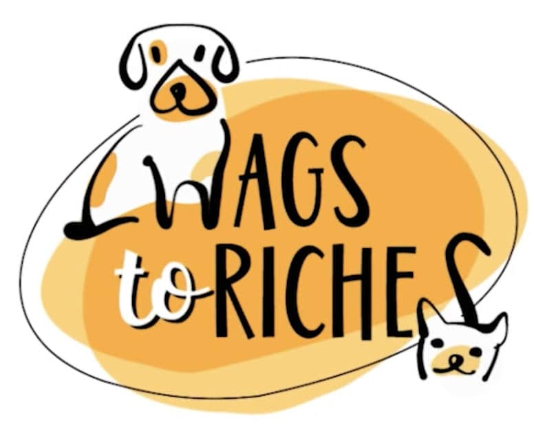
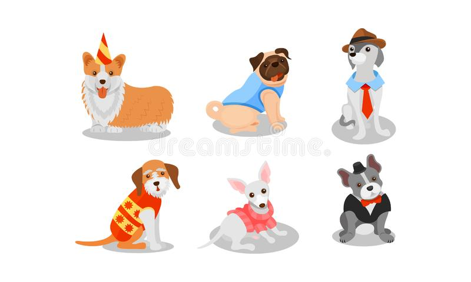
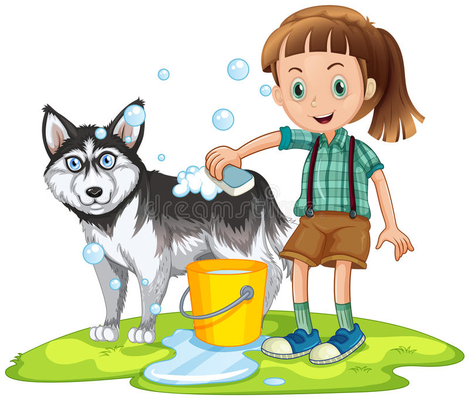
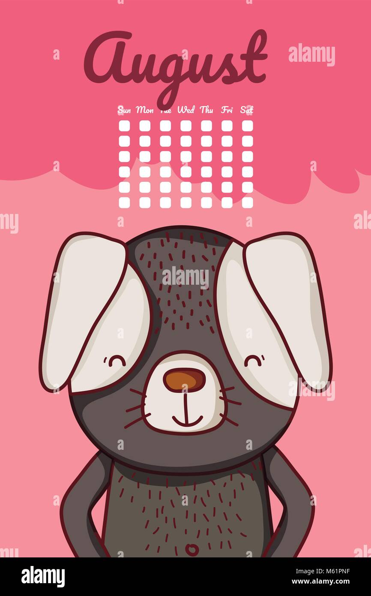
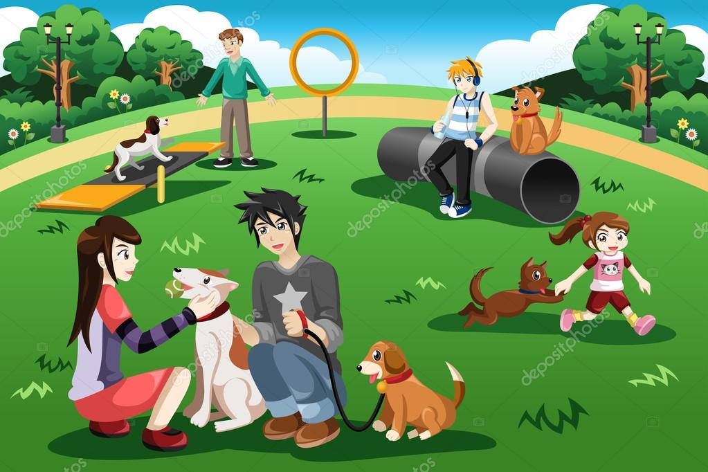
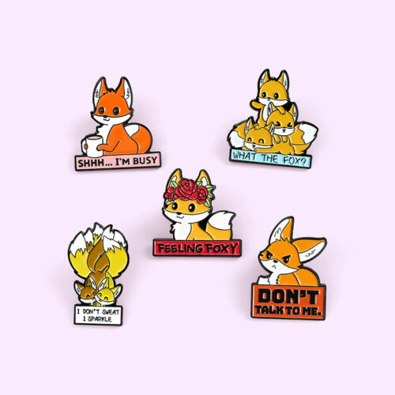

1. A Wags to Riches casino night featuring table games with an adoptable pet theme
This first idea isn’t pet friendly, but it can be a lot of fun for your supporters anyway. Set up table games like roulette, blackjack, and poker and encourage people to try to win the most chips by offering a fantastic prize for the luckiest gambler at your event. You can use this type of event to raise funds for adoption fees, fund food for adoptable shelter animals, and more.
2. Pet fashion shows featuring adopted animals in costumes
This pet-friendly fashion show is a pawsitively fantastic way to get supporters and their pets involved in your cause. Get supporters to dress their dogs and cats in their best costumes and strut their stuff on the catwalk. Charge an entry fee to walk and award prizes for best costumes in each category.
3. A dog washing event in which owners can pay to have their dogs bathed by volunteers
Another great way to get supporters and their pets to give to your shelter is to charge a small fee to have their pets washed by volunteers from your shelter. If you don’t have a pet that loves water, bathing them can really be a chore. This event is designed to make bathing your pet easier on the owner while raising crucial funds for your shelter.
4. Pet photo shoot event where donors pay to have their pets immortalized on a greeting card or put into a calendar
This next fundraising idea immortalizes supporters’ pets with a professional photo shoot. Offer supporters pet portraits for a fee. You can offer prints of the portrait or even turn the photo into a greeting card. To add to the fun, you can produce and sell a calendar featuring the best pet portraits from the photo shoots. This is a great way to raise extra funds from your community, especially if you start selling them around the new year.
5. Host a bark in the park pet-friendly social gathering at a dog-friendly park
A bark in the park social event can be a great way for your animal shelter to meet new supporters and get the word out about the needs that you’re currently facing. This pet-friendly event offers a great opportunity for pet owners to socialize at a dog-friendly park. You can charge for drinks and food at the event to raise funds for your cause and can even set up an informational booth where supporters can come and learn about your cause and maybe even meet an adoptable shelter animal.
6. A pins for pups bowling tournament event
This last in-person event isn’t pet friendly, but does offer a fun way to support shelter animals in need. A bowling tournament is a great opportunity to get people of all ages and skill levels together to enjoy a day of bowling for a good cause. Try to partner with the bowling alley to earn a percentage of sales on food and drinks and charge to take part in the bowling tournament itself.